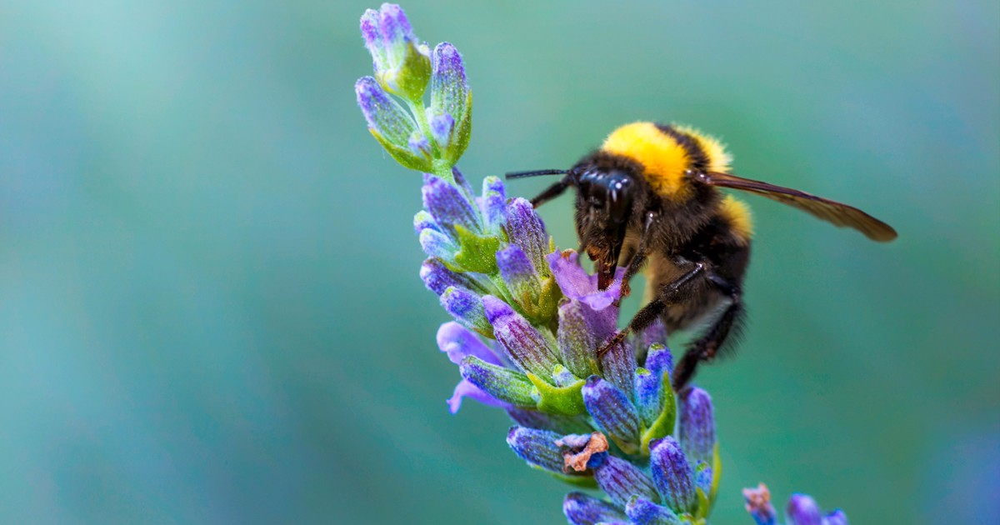

BEE

|
Bees are winged insects closely related to wasps and ants, known for their roles in pollination and, in the case of the best-known bee species, the western honey bee, for producing honey. Bees are a monophyletic lineage within the superfamily Apoidea. They are presently considered a clade, called Anthophila. There are over 16,000 known species of bees in seven recognized biological families. Some species – including honey bees, bumblebees, and stingless bees – live socially in colonies while most species (>90%) – including mason bees, carpenter bees, leafcutter bees, and sweat bees – are solitary. Bees are found on every continent except Antarctica, in every habitat on the planet that contains insect-pollinated flowering plants. The most common bees in the Northern Hemisphere are the Halictidae, or sweat bees, but they are small and often mistaken for wasps or flies. Bees range in size from tiny stingless bee species, whose workers are less than 2 millimetres (0.08 in) long, to Megachile pluto, the largest species of leafcutter bee, whose females can attain a length of 39 millimetres (1.54 in). Bees feed on nectar and pollen, the former primarily as an energy source and the latter primarily for protein and other nutrients. Most pollen is used as food for their larvae. Vertebrate predators of bees include primates and birds such as bee-eaters; insect predators include beewolves and dragonflies. Bee pollination is important both ecologically and commercially, and the decline in wild bees has increased the value of pollination by commercially managed hives of honey bees. The analysis of 353 wild bee and hoverfly species across Britain from 1980 to 2013 found the insects have been lost from a quarter of the places they inhabited in 1980. Human beekeeping or apiculture (meliponiculture for stingless bees) has been practised for millennia, since at least the times of Ancient Egypt and Ancient Greece. Bees have appeared in mythology and folklore, through all phases of art and literature from ancient times to the present day, although primarily focused in the Northern Hemisphere where beekeeping is far more common. In Mesoamerica, the Mayans have practiced large-scale intensive meliponiculture since pre-Columbian times |
|---|